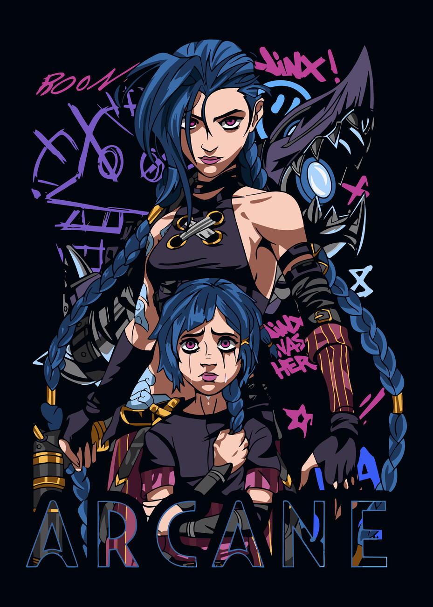

Histoire
La série Arcane, basée sur l'univers de League of Legends, se déroule dans les villes jumelles de Piltover et Zaun. Piltover est une métropole prospère surnommée la "Cité du Progrès", tandis que Zaun, située en contrebas, est marquée par la pauvreté et la pollution. L'histoire suit les destins croisés de Vi et Jinx, deux sœurs issues de Zaun, dont la relation est mise à l'épreuve par des conflits sociaux, politiques et personnels. Le récit explore les tensions entre magie et technologie, alimentées par l'invention de l'Hextech, une technologie révolutionnaire de Piltover.
Personnages
mais qui sont les parssonages.
1. Vi : on as deja parlée de vi mais qui c'est? Vi est Une combattante déterminée et protectrice, c'est l'aînée des deux sœurs ( Vi et Jinx ). Elle incarne la force brute et est prête à tout pour défendre ce en quoi elle croit, surtout quand il s'agit de Jinx.
2. ensuite parlon de Jinx : De son vrai nom Powder, Jinx est la petite sœur de Vi. Tourmentée par des traumatismes passés, elle devient une inventrice excentrique et chaotique, plongeant dans un monde de folie.
3. on rencontre aussi Jayce : Un brillant inventeur de Piltover, il est le créateur de l'Hextech, une technologie révolutionnaire fusionnant magie et science. Jayce est ambitieux, mais ses actions ont des conséquences inattendues.
4. on continue avec Viktor : Originaire de Zaun, Viktor est un scientifique et collaborateur de Jayce. Obsédé par l'amélioration de l'humanité, il explore des technologies souvent controversées.
5. Ekko : Un jeune prodige de Zaun, Ekko est rusé et ingénieux. Il rêve d'un avenir meilleur pour sa communauté et est prêt à se battre pour ses idéaux meme si cela veut dire affronter son ami d'enfence Jinx.
6. Caitlyn Kiramman : Une tireuse d'élite et enquêtrice de Piltover. Issue d'une famille noble, elle s'efforce de rendre la justice tout en explorant le contraste entre les mondes de Piltover et de Zaun.
7. Silco : L'antagoniste principal, un leader de Zaun prêt à tout pour garantir l'indépendance de la cité souterraine. Complexe et calculateur, il a une relation fascinante avec Jinx.
8 Heimerdinger : Un yordle sage et inventeur légendaire. Il est une figure importante à Piltover, cherchant à guider les jeunes scientifiques tout en préservant l'équilibre entre innovation et responsabilité.

Univers
Piltover
Connue comme "la cité du progrès", Piltover est une métropole florissante, centrée sur l'innovation technologique et scientifique. Ses citoyens vivent dans une société relativement prospère, où règnent l'ordre et l'élégance. Les grandes familles influentes, comme les Kiramman, jouent un rôle important dans le gouvernement et les affaires de la ville.
Zaun
Située sous Piltover, Zaun est une cité industrielle et sombre, marquée par la pauvreté et les conflits. Elle est animée par des usines chimiques et des technologies brutales, créant une atmosphère dangereuse mais pleine de vie. Les habitants de Zaun doivent souvent lutter pour survivre, dans un environnement où les inégalités sont flagrantes.
Tensions entre Piltover et Zaun
Les tensions entre Piltover et Zaun sont au cœur de l'intrigue de Arcane. Ces deux mondes sont séparés par un abîme économique, social et culturel, mais ils sont également liés par la technologie et les rêves de ceux qui osent imaginer un avenir différent.
Thèmes explorés
Les thèmes de l'injustice sociale, des conflits familiaux et des ambitions personnelles alimentent cette histoire poignante. Chaque cadre est magnifiquement réalisé, des somptueux bâtiments de Piltover aux ruelles exiguës de Zaun, donnant vie à un univers immersif où les personnages naviguent entre lumière et ombre. C'est un monde à la fois captivant et brutal, porté par des dilemmes moraux complexes.
tu peut lacher un commentaire sur mon dernier short youtube pour me donner ton avis